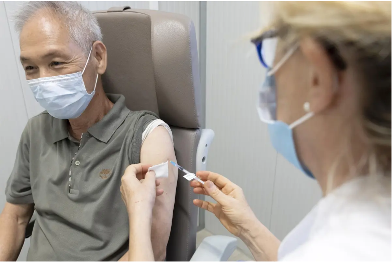

NOTICIAS RELACIONADAS

Suiza inicia una nueva ronda de vacunaciones contra la covid-19 para mayores de 16 años.
Suiza inicia una nueva ronda de vacunaciones contra la covid-19 para mayores de 16 años.